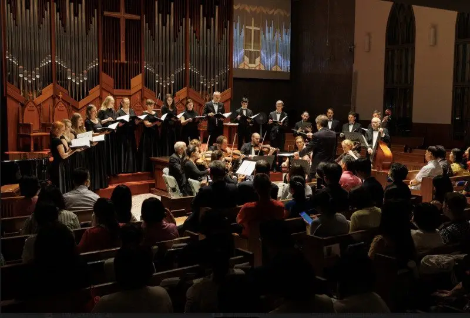
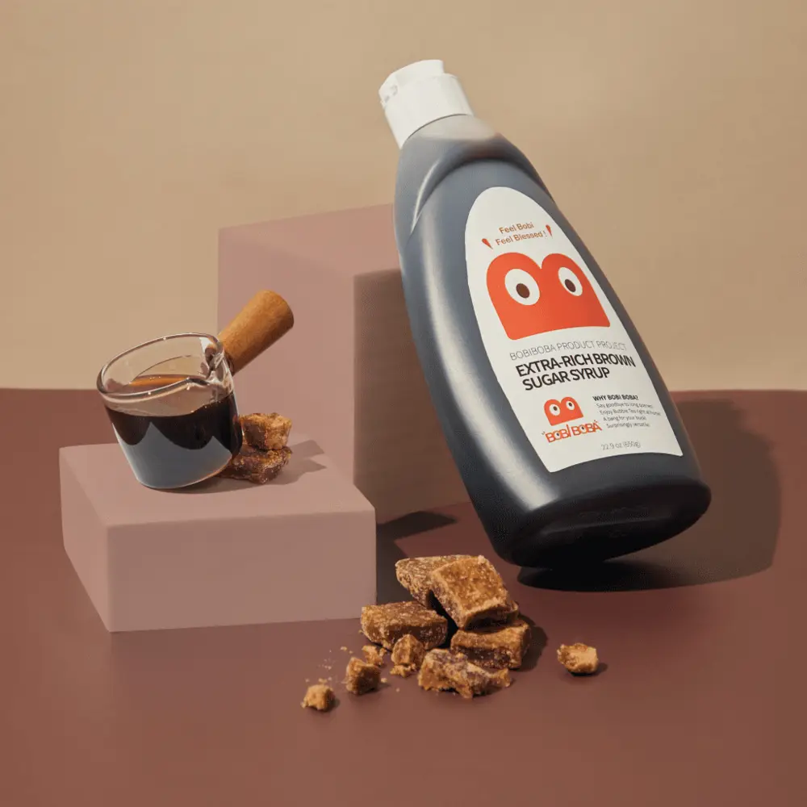
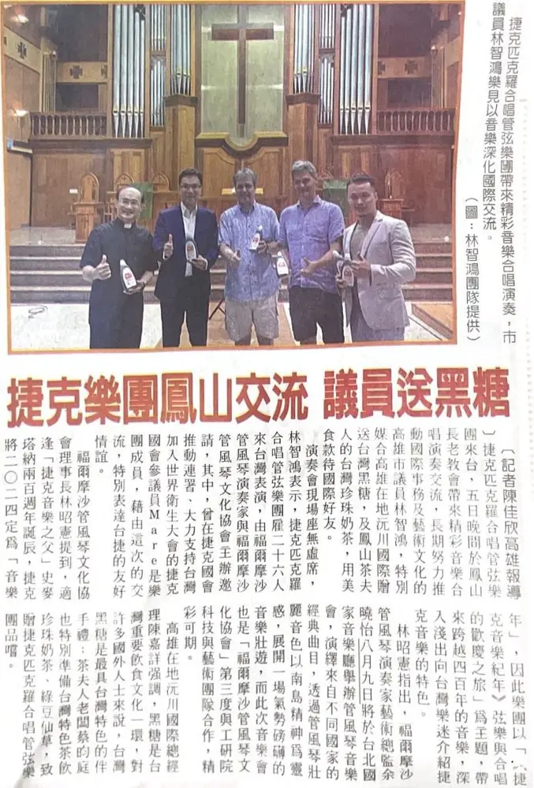

文章 / 飲品配方與資訊
Our brown sugar was chosen as a gift!
這篇是英文原文，尚未完成繁體中文翻譯。中文選單與相關商品連結不會切回英文介面。

查看英文原文（尚未翻譯）
Vítejte na Tchaj-wanu!
The Piccolo coro & Piccola orchestra, a famous choir and orchestra from Czech, was invited to perform in Taiwan.
Did you notice anything interesting?
That’s right, we’re honoured to have our brown sugar as a gift to such a prestigious group. Read on to learn more!

Music to the ears
To promote friendship and collaboration in music, the orchestra performed “The Year of Czech Music: A Celebrating Journey of Strings and Choir” in both Taipei and Kaohsiung.
Since it was the 200th anniversary of famous composer Bedřich Smetana’s birthday, Czech named this year as the “Czech Music Year”!
The performance showcased a collection of classical Czech music’s greatest hits, including Zdeněk Lukáš’ “Pater Noster,” and “Cantico delle creature” by Petr Eben.
That’s not all, the show also featured songs from the man Smetana himself!
Most famously it included “The Bartered Bride Overture”, the opening of the opera “The Bartered Bride.”
Since this was one of Smetana’s most iconic works, it’s only natural to put it in.
From the light trills of the piccolo to violin’s smooth melodies, plus the choir’s beautiful harmonics…This show takes you on a journey across centuries of Czech music!

Brown sugar time!
With its smoky, mollassy sweetness and cup-walling goodness, brown sugar is the perfect gift to introduce someone to the wonderful world of bubble tea.
In the show, we treated the choir with delicious boba tea, made with our own syrup and other ingredients!
We thank the Kaohsiung government for giving us this opportunity to share Taiwan’s bubble tea with the world.

Try it out!
Want a taste of our brown sugar? Looking for the perfect gift?
Pick up a bottle, now available on Amazon!
Feel free to also check out our selection of boba tea ingredients too!